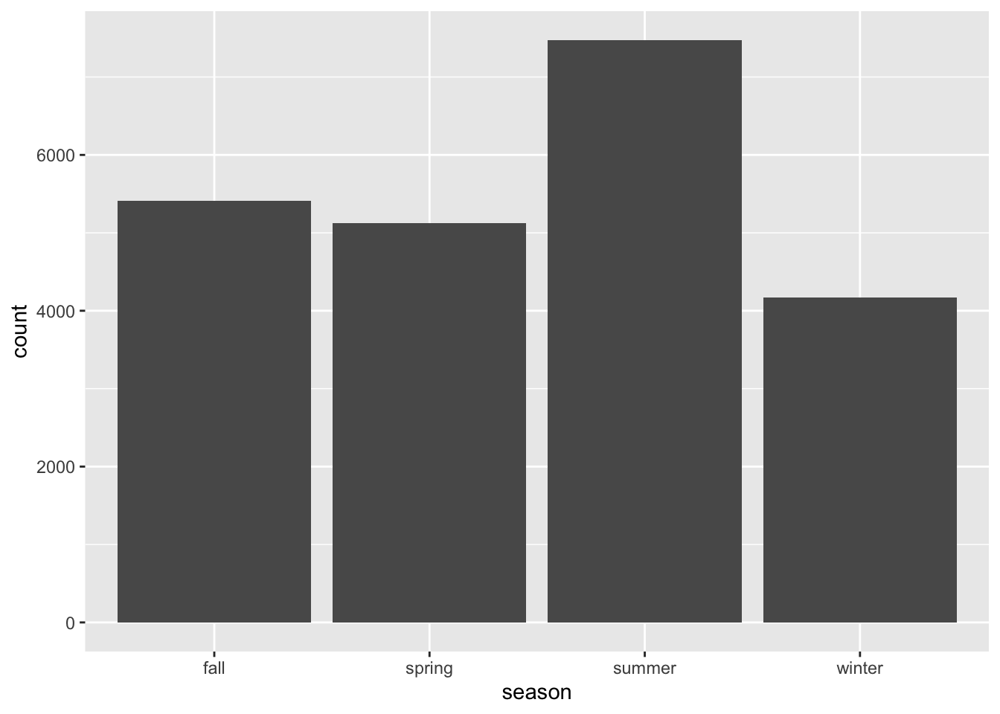

season =
NYPD_Shooting_Incident_cleaned |>
group_by(month) |>
distinct(incident_key) |>
summarise(count = n()) |>
mutate(season = case_match(
month,
"01" ~ "winter",
"02" ~ "winter",
"03" ~ "spring",
"04" ~ "spring",
"05" ~ "spring",
"06" ~ "summer",
"07" ~ "summer",
"08" ~ "summer",
"09" ~ "fall",
"10" ~ "fall",
"11" ~ "fall",
"12" ~ "winter",
))
season |>
ggplot(aes(x = season, y = count)) +
geom_col()
A two-sample z-test was conducted to compare the average of summer and winter shooting incidents.
summer_winter =
NYPD_Shooting_Incident_cleaned |>
group_by(month, year) |>
distinct(incident_key) |>
filter(!year == 2023) |>
summarise(count = n()) |>
mutate(season = case_match(
month,
"01" ~ "winter",
"02" ~ "winter",
"03" ~ "spring",
"04" ~ "spring",
"05" ~ "spring",
"06" ~ "summer",
"07" ~ "summer",
"08" ~ "summer",
"09" ~ "fall",
"10" ~ "fall",
"11" ~ "fall",
"12" ~ "winter",
)) |>
select(-year) |>
ungroup() |>
filter(season %in% c("winter", "summer"))
summer =
summer_winter |>
filter(season == "summer") |>
select(count)
winter =
summer_winter |>
filter(season == "winter") |>
select(count)
summer_winter_after =
bind_cols(summer, winter) |>
rename(summer = count...1,
winter = count...2)
z_test = z.test(x = summer_winter_after$summer, y = summer_winter_after$winter, sigma.x = sd(summer_winter_after$summer), sigma.y = sd(summer_winter_after$winter))
z_test##
## Two-sample z-Test
##
## data: summer_winter_after$summer and summer_winter_after$winter
## z = 9.4566, p-value < 2.2e-16
## alternative hypothesis: true difference in means is not equal to 0
## 95 percent confidence interval:
## 48.79243 74.30561
## sample estimates:
## mean of x mean of y
## 140.58824 79.03922z-test yielded the following results:
Z value: 9.4566
P-value: < 2.2e-16 (very small, indicating strong evidence against the original hypothesis)
Confidence interval: (48.79, 74.31)
The results of the z-test for both samples indicate that there is a statistically significant difference between the average number of shootings in the summer and winter. p-value is extremely small, providing strong evidence against the original hypothesis. Means that there is a large difference between the average number of shootings in the summer and winter months.
This statistical analysis aims to compare the proportion of male shooting victims between the boroughs of Manhattan and Queens in New York City. The goal is to investigate whether there is a significant difference in the proportion of male victims between these two boroughs.
Use a two-sample test for equality of proportions with continuity correction to compare the proportions of male shooting victims in Brooklyn and Staten Island.
prop_df =
NYPD_Shooting_Incident_cleaned |>
select(boro, vic_sex) |>
group_by(boro, vic_sex) |>
summarize(sum = n())
num_brook =
prop_df |>
filter(boro == "BROOKLYN")
num_SI =
prop_df |>
filter(boro == "STATEN ISLAND")
num_brook = sum(pull(num_brook, sum))
num_SI = sum(pull(num_SI, sum))
num_brook_male =
prop_df |>
filter(boro == "BROOKLYN") |>
filter(vic_sex == "M") |>
pull(sum)
num_SI_male =
prop_df |>
filter(boro == "STATEN ISLAND") |>
filter(vic_sex == "M") |>
pull(sum)
prop.test(c(num_brook_male, num_SI_male), n = c(num_brook, num_SI))##
## 2-sample test for equality of proportions with continuity correction
##
## data: c(num_brook_male, num_SI_male) out of c(num_brook, num_SI)
## X-squared = 3.4568, df = 1, p-value = 0.06299
## alternative hypothesis: two.sided
## 95 percent confidence interval:
## -0.002741196 0.044648482
## sample estimates:
## prop 1 prop 2
## 0.9024998 0.8815461The test results indicate the following:
X-squared Value: 3.4568
Degrees of Freedom (df): 1
P-Value: 0.06299
Confidence Interval: (-0.0027, 0.0446)
While the p-value is greater than the conventional significance level of 0.05, suggesting that we do not have strong evidence against the null hypothesis. Indicate that the proportions of male victims in Brooklyn and Staten Island are likely to be similar.